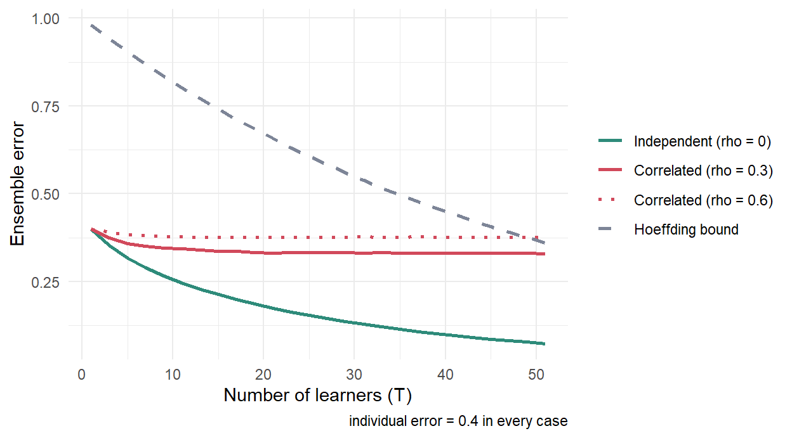

library(ggplot2)
Ts <- seq(1, 51, by = 2); eps <- 0.4
# 독립일 때: 다수결이 틀릴 확률 = Binomial 꼬리확률
indep <- pbinom(floor(Ts / 2), Ts, 1 - eps)
bound <- exp(-0.5 * Ts * (1 - 2 * eps)^2) # Hoeffding 상한
# 상관이 있을 때: 공통 성분 u를 공유하는 잠재변수로 모의실험
sim_rho <- function(T_, eps, rho, R = 20000, seed = 1) {
set.seed(seed); thr <- qnorm(eps)
u <- matrix(rnorm(R), R, T_) # 모든 학습기가 공유하는 오차
lat <- sqrt(rho) * u + sqrt(1 - rho) * matrix(rnorm(R * T_), R, T_)
mean(rowSums(lat < thr) > T_ / 2) # 과반이 틀린 비율
}
lvl <- c("Independent (rho = 0)", "Correlated (rho = 0.3)",
"Correlated (rho = 0.6)", "Hoeffding bound")
curves <- rbind(
data.frame(T = Ts, error = indep, kind = lvl[1]),
data.frame(T = Ts, error = sapply(Ts, sim_rho, eps, 0.3), kind = lvl[2]),
data.frame(T = Ts, error = sapply(Ts, sim_rho, eps, 0.6), kind = lvl[3]),
data.frame(T = Ts, error = bound, kind = lvl[4])
)
curves$kind <- factor(curves$kind, levels = lvl)
ggplot(curves, aes(T, error, colour = kind, linetype = kind)) +
geom_line(linewidth = .9) +
scale_colour_manual(values = setNames(c("#2e8b7a", "#d1495b", "#d1495b", "#7d8597"), lvl)) +
scale_linetype_manual(values = setNames(c(1, 1, 3, 2), lvl)) +
labs(x = "Number of learners (T)", y = "Ensemble error",
colour = NULL, linetype = NULL,
caption = "individual error = 0.4 in every case") +
theme_minimal()